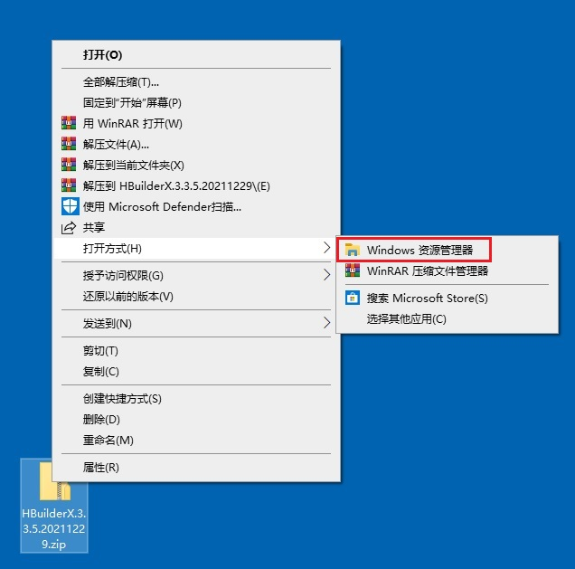
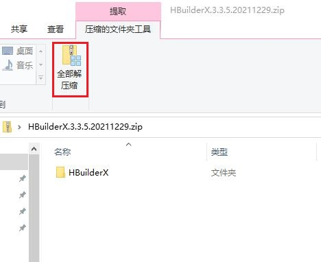
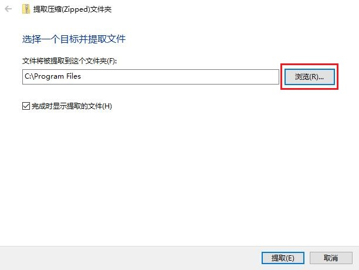
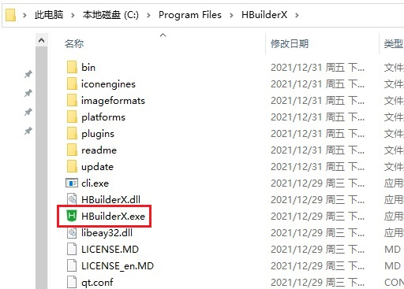
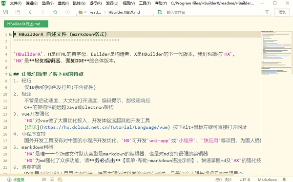
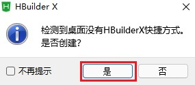
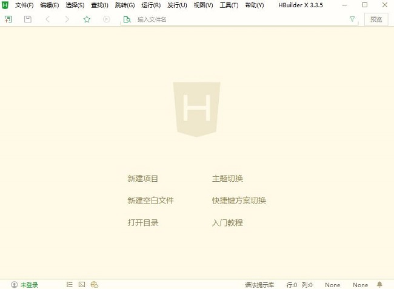

教你手动安装HBuilderX
一、下载HbuilderX
下载HbuilderX
二、安装
1.使用资源管理器解压HbuilderX文件(速度较慢，建议使用其他解压软件)
(1)下载好的HbuilderX压缩包上右击-->打开方式-->Windows资源管理器。

(2)在窗口上方功能区中单击"全部解压缩"。

(3)单击"浏览"，选择Windows程序默认文件夹 C:\Program Files ，单击"提取"。

2.首次打开HbuilderX
(1)打开Windows资源管理器，找到提取出的文件，进入HbuilderX的路径下，双击打开HbuilderX应用程序。

(2)首次打开将自动显示自述文件，可在标签卡中关闭。

(3)先关闭一次HbuilderX，将弹出提示"是否创建快捷方式"，单击"是"。

3.双击桌面快捷方式再次打开HbuilderX
双击桌面快捷方式再次打开HbuilderX，成功进入。
